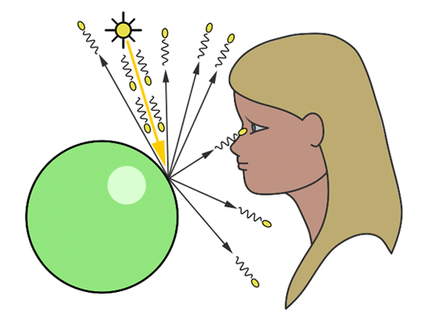

3D Computer Graphics
Quick and Dirty Intro to Graphics Programming
Mohammed Chamma
November 6 2014
uOttawa
Example from Notch
Raycasting
Example
How?
Raytracing
Raytracing
How?

How?
Resources
Gist of Links
Scratch Pixel Raytracing Tutorial
Raycasting Tutorial
WebGL Lessons. Starts from Zero!